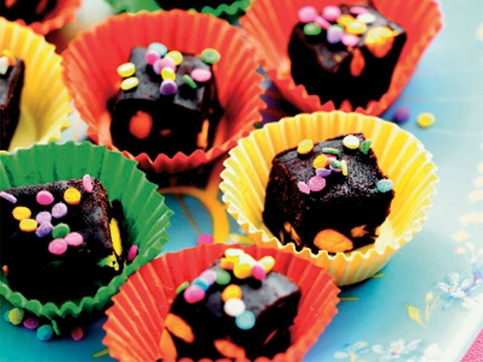
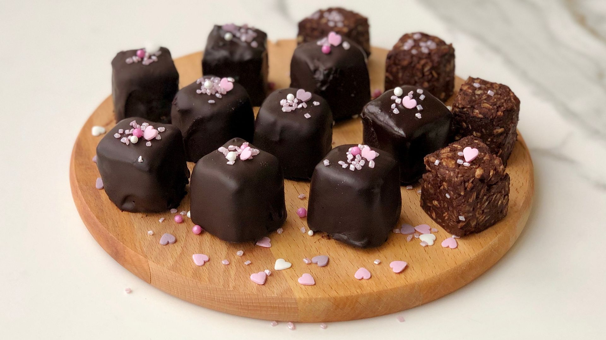
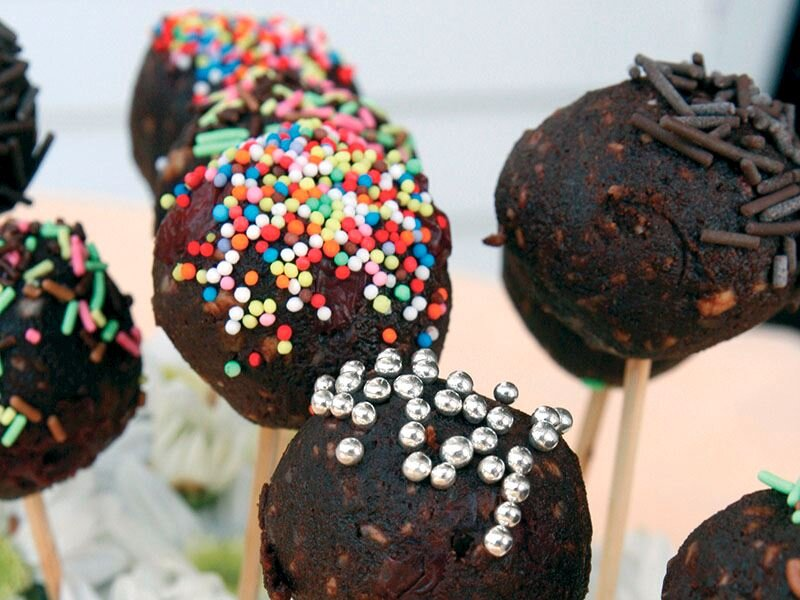

...Çikolata Küpleri...
Çikolatalı ve şam fıstıklı tadımlık lezzetler... Yalnızca 4 malzeme ile hazırlanan çikolata küpleri,renkli kağıtlarda veya kürdan batırılarak servis edilir.
Tarif:Rukiye Sarıkaya
Kaç Kişilik:4 Kişilik | Hazırlama Süresi:30 Dakika | Pişirme Süresi:10 Dakika
Çikolata Küpleri Tarifi İçin Malzemeler...
- 350 gr bitter çikolata
- 150 ml krema
- 1 çorba kaşığı tereyağı
- 150 gr şamfıstık
Çikolata Küpleri Nasıl Yapılır?
- Bitter çikolatayı ertitin.
- Eriyen çikolataya krema ve tereyağı ekleyip tezgaha alın.
- Şam fıstıklarını parçalara bölün.
- Şam fıstıklarını krema ve tereyağı karışımına dökün.
- Hazırlanan çikolatayı alüminyum tepsiye dökün.
- Buzdolabında 2 saat bekletin.
- Çikolatayı kalıptan çıkartıp kare parçalara bölüp servis edin.
Afiyet olsun


